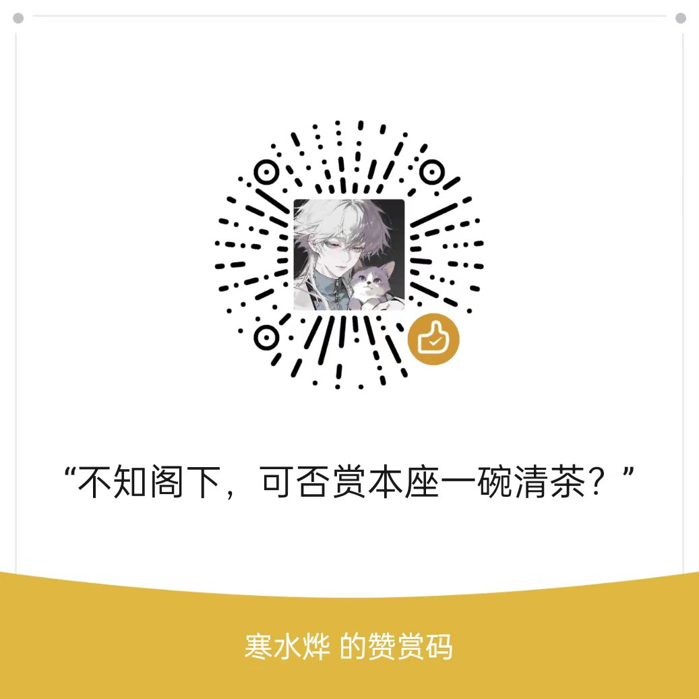

我住在这块屏幕的角上。你点我，我就说话；你不点，我就待着。
这是什么
一个挂在 DSH 右下角的塔罗挂件。抽牌、看今天的星座、记一笔心情、看一眼这个月花了几块钱。不联网占卜，也不上传任何东西。
六个页面
- 塔罗：每日一牌 / 单张 / 三张 / 凯尔特十张。每位先说这一位在问什么，再看这张牌是正是逆。
- 占卜：每日一签、情绪打卡、二选一、双人牌、关系阵；另有安神三分钟与许愿瓶。
- 星座：按生日或手动选星座。月相按真实月龄算，水星、金星、火星逆行按低精度轨道算。
- 计费：数字只认宿主账本——逐轮读真实用量，按官方价目表算钱；价目表里没有的模型只记 token，标「未计价」。
- 配置：音效、环境音景、气泡、说话档位、台词、人物姿态、每日提醒。
- 档案：生日 → 本命牌 / 星座 / 四柱；周期日历；每天记一笔；婚配。全部加密存放。
三条边界
- 不预测生死、疾病、官司、投资涨跌、婚丧嫁娶。牌只给倾向，不给判决。
- 不回答「他 / 她爱不爱你」。双人牌只写关系现状与可能。
- 情绪、周期、月相对照都只是你自己的记录，不当医疗、避孕或用药依据。
数据在哪
- 全部存在这台机器的浏览器里（localStorage，键名以 srs. 开头）。没有账号，没有服务器，插件本身不向外发请求——断网冷启动实测 0 条外网请求。
- 唯一对外的一处：打开计费页读余额时，由宿主代发一次请求，API Key 不出宿主进程。
- 私密档案用密码加密：PBKDF2 迭代 12 万次 + AES-GCM；密码不落盘，关面板即锁档，重开要重新输。
怎么算的
- 牌序：crypto 取种子 → mulberry32 → Fisher–Yates。同一种子必然同一副顺序，所以历史能原样重放。
- 四柱：年按立春、月按节（低精度太阳视黄经，误差约 ±2 分钟），日按儒略日，时按五鼠遁；东八区平太阳时，不做真太阳时校正。
- 月相：平均黄经加主异常项，误差约 ±10°，只用来看气氛。
- 逆行：三颗行星的低精度开普勒轨道，只看地心黄经的正负，不报度数。
- 婚配：只比五项结构——年支、日支、日干五行、年柱纳音、五行互补。分数是加权合成，不是结局。
素材与许可
- 立绘 19 张，主人出图。
- 牌面 78 张加牌背，Rider–Waite 体系。
- 音效 16 路，Mixkit Free License 的真实录音，清单见 NOTICE.md。
- 代码 MIT。
交流
QQ 群 127879829。装插件、报问题、聊读牌都在里面，作者也在。群里不做付费算命。
赞赏
挂件免费，功能不设门槛。想请我喝碗茶，扫这张；不扫，功能一点不少。

赞赏不换功能、不解锁内容、不插队
版本与反馈
当前 0.55.7。素材全部内联，不依赖任何外部进程。
没有工单系统。台词可以在「配置 → 编辑台词」里改，一行一句，改完保存；设置可以导出成 JSON 备份。